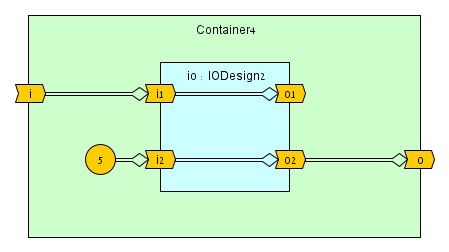

The operator is commutative, meaning a <> b is equivalent to b b <> a. One argument is the producer, while the other consumer. The dataflow direction is sensitive to the context in which the operator is applied.
The operator is non-commutative, meaning a := b determines that b is the producer, transferring data to the consumera.
Mutation
A consumer can only be connected once.
Consumer assignments are unlimited.
Statement Order
Connections statements can be placed in any order.
Assignment statements
Connection <> Rules
Port Direct Connections
The onnection operator <> is generally used to connect parent designs to their child designs (components) and connect between sibling designs (children of the same parent). Opposed to VHDL/Verilog, there is no need to go through 'signals' to connect sibling design ports, e.g.:
import dfhdl.*
class Plus1 extends DFDesign:
val x = UInt(8) <> IN
val y = UInt(8) <> OUT
y <> x + 1
@top class Plus2 extends DFDesign:
val x = UInt(8) <> IN
val y = UInt(8) <> OUT
val p1A = Plus1()
val p1B = Plus1()
p1A.x <> x
p1A.y <> p1B.x
y <> p1B.y
given options.CompilerOptions.PrintBackendCode = false
given options.CompilerOptions.PrintDFHDLCode = true
Dataflow Value Connections
At least one of the connected sides must be a dataflow port (cannot connect two dataflow values together), e.g.:
1234567
traitConn1{valport=DFUInt(8)<>OUTvaltemp1=DFUInt(8)valtemp2=DFUInt(8)port<>temp1//OK!temp1<>temp2//Bad connection! At least one connection side must be a port}
Dataflow Input Port Assignment := Rule
An input port cannot be assigned to. A connection must be used to transfer data to an input port, e.g.:
1 2 3 4 5 6 7 8 91011
traitIOextendsDFDesign{valin=DFUInt(8)<>INvalout=DFUInt(8)<>OUTout:=in//OK! Can assign internally to an output port}traitAssign1extendsDFDesign{valio=newIO{}io.in:=1//Bad assignment! Must use a connection annotationio.in<>1//OK!io.out:=1//Bad assignment! Output ports can only be assigned internally}
Immutable Value Connections
When connecting a port to an immutable value, the port must be a consumer, meaning the connection is done internally to an output port or externally to an input port, e.g.:
1 2 3 4 5 6 7 8 9101112131415
traitIOextendsDFDesign{vali=DFUInt(8)<>INvalo=DFUInt(8)<>OUT//For brevity, we consider every connection/assignment in this example separately.//We ignore multiple connection issues that should arise.o<>1//OK!i<>1//Bad connection! 1 is immutable (constant)i<>o.prev//Bad connection! o.prev is immutablei.prev<>o//OK!}traitIOUserextendsDFDesign{valio=newIO{}io.i<>1//OK!io.o<>1//Bad connection! 1 is immutable}
Different Type Connections
Connecting between different types is possible, but depends on the specific type: if it enables automatic conversion for the connection to succeed. Different port widths are considered different types and casting is required. An alias/casted/converted dataflow value is considered immutable for the connection (see above). Here are some examples:
1 2 3 4 5 6 7 8 910111213141516171819202122
traitDifferentTypesConnextendsDFDesign{vali=DFUInt(8)<>INvalo=DFUInt(8)<>OUTvalob9=DFBits(9)<>OUTvalu7=DFUInt(7)valu9=DFUInt(9)valb8=DFBits(8)//For brevity, we consider every connection/assignment in this example separately.//We ignore multiple connection issues that should arise.u7<>o//OK! u7 is automatically extended to connect to u7<>i//Bad connection! u7 is considered immutable when extended to 8 bitso<>b8//Bad connection! There is not automatic casting between bits and uinto<>b8.uint//OK!o.bits<>b8//Bad connection! An alias of output port cannot be connected to//This may change in the future.o.bits:=b8//OK!u9<>i//OK! In this example u9 is the consumerob9<>b8//Bad connection! Bit vectors are NOT automatically extended.ob9:=b8//Bad assignment! Bit vectors are NOT automatically extended.}
Multiple Connections
Two or more dataflow producers cannot be connected to the same consumer (a single producer can be connected to more than one consumer), e.g.:
1 2 3 4 5 6 7 8 91011121314151617181920
traitGenextendsDFDesign{valout1=DFUInt(8)<>OUTinit1valout2=DFUInt(8)<>OUTinit2}traitConn2extendsDFDesign{valin1=DFUInt(8)<>INvalin2=DFUInt(8)<>INvalout=DFUInt(8)<>OUTvaltemp1=DFUInt(8)temp1<>in1//OK!out<>in1//Also OK! (Same producer can connect to more than one cosumer)temp1<>in2//Bad connection! Second producer connection to temp1valgen=newGen{}valtemp2=DFUInt(8)valtemp3=DFUInt(8)gen.out1<>temp2//OK!gen.out1<>temp3//Also OK! (Same producer can connect to more than one cosumer)gen.out2<>temp2//Bad connection! Second producer connection to temp2}
Mixing Assignments and Connections
The same consumer cannot be both assigned to and connected to as the consumer, e.g.:
1 2 3 4 5 6 7 8 910111213
traitConn3extendsDFDesign{valout1=DFUInt(8)<>OUTvalout2=DFUInt(8)<>OUTvalout3=DFUInt(8)<>OUTout1<>1//OK!out1:=1//Bad assignment! Cannot assign to a connected dataflow variableout2:=2//OK!out2<>2//Bad connection! Cannot connect to an assigned dataflow variableout3:=1//OK!out3:=2//Also OK! (Multiple assignments are accepted)}
Connection Statement Order
The connection <> statement ordering does not matter.
Connection and Initial Conditions
A connection <> transfers initial conditions to the consumer, but if the consumer is already initialized then the consumer keeps its existing initial conditions. Here is an example:
1 2 3 4 5 6 7 8 91011121314
traitIOInitextendsDFDesign{vali=DFUInt(8)//init = (11, 12) Overriden from TopInit connectionvalo=DFUInt(8)init5//init = (5) Not overridden due to assignmentvalip=i.prev//init = (12) Prev moves down the init queueo:=ip}traitTopInitextendsDFDesign{vali=DFUInt(8)<>IN.init(1,2)//init = (1, 2) The top-level initial conditionsvalo=DFUInt(8)<>OUTinit1//init = (1) Keeps its initializaionvaliPlus10=in+10//init = (11, 12) Arithmetics affect initvalio=newIOInit{}io.i<>inPlus10o<>io.o}
We learn from the above that port initial conditions are often overridden due to connections. So why should we apply initial conditions to a port? Answer: If we want to define what happens when a port is open (unconnected). Read the next two sections for more information.
Open (Unconnected) Ports
Ports have two connection sides: a consumer side and a producer side. Typically ports have both sides connected, except for top-level ports. When either port side is unconnected, we refer to it as open, and expect the following behavior:
When the port consumer side is open, the port produces tokens according to its initial condition. Uninitialized open-consumer ports generate bubble tokens.
When the port producer side is open (unless it is a top-level output port), the port is considered as not used, and is pruned during compilation. All dataflow streams that are only used by this port will be pruned as well.
Note: the current compiler implementation does not warn of open ports.
Example:
1 2 3 4 5 6 7 8 9101112131415
traitIOInit2extendsDFDesign{vali1=DFUInt(8)<>INinit5valo1=DFUInt(8)<>OUTvali2=DFUInt(8)<>INvalo2=DFUInt(8)<>OUTinit2o1<>i1}traitTopIO2extendsDFDesign{vali=DFUInt(8)<>INvalo=DFUInt(8)<>OUT//Will generate infinite tokens of 2, due to io.o2 initvalio=newIO5{}o<>io.o2i<>io.i1io.i2<>5}
Initial Condition Cyclic Loop Errors
Connections enable dataflow feedbacks and even dataflow dependency loops. There is no problem in dependency loops, other than pipelining limitations (see chapter TBD for more information). However, if we only apply connections and references that transfer initial conditions, we end up with a cyclic dependency for initial condition which is illegal. Therefore to enable dependency loops, at least one link in the loop must be an assignment, which has an implicit state and does not affect initial conditions. Consider the following examples:
traitIO1extendsDFDesign{vali=DFUInt(8)<>INvalo=DFUInt(8)<>OUTo<>i//Connection transfers initial conditions from i to o}traitBadConnLoop1extendsDFDesign{valo=DFUInt(8)<>OUTvalio=newIO1{}io.i<>io.o//Bad connection! An initial conditions cyclic loopo<>io.o}traitIO2extendsDFDesign{vali=DFUInt(8)<>INvalo=DFUInt(8)<>OUTo<>i.prev//prev transfers initial conditions}traitBadConnLoop2extendsDFDesign{valo=DFUInt(8)<>OUTvalio=newIO2{}io.i<>io.o//Bad connection! An initial conditions cyclic loopo<>io.o}traitIO3extendsDFDesign{vali=DFUInt(8)<>INvalo=DFUInt(8)<>OUTo:=i//Assignment does not affect initial conditions and therefore breaks the loop}traitOKConnLoopextendsDFDesign{valo=DFUInt(8)<>OUTvalio=newIO3{}io.i<>io.o//OK!o<>io.o}
Note: when following the drawing convention within this document, we want to avoid a double-lined loop in order to avoid a cyclic initial conditions dependency.
traitContainerextendsDFDesign{vali=DFUInt(8)<>INvalo=DFUInt(8)<>OUTvalio=newIODesign{}i<>io.i//Connecting between owner input and child inputio.o<>o//Connecting between child output and owner output}
123456789
traitContainer2extendsDFDesign{vali=DFUInt(8)<>INvalo=DFUInt(8)<>OUTvalio1=newIODesign{}valio2=newIODesign{}i<>io1.i//Connecting between owner input and child inputio1.o<>io2.i//Connecting between siblings (output <> input)io2.o<>o//Connecting between child output and owner output}
12345678
traitContainer3extendsDFDesign{vali=DFUInt(8)<>INvalo=DFUInt(8)<>OUTvalio=newIODesign2{}i<>io.i1//Connecting between owner input and child inputi<>io.i2//Connecting between owner input and child inputo<>(io.o1+io.o2)}
12345678
traitContainer4extendsDFDesign{vali=DFUInt(8)<>INvalo=DFUInt(8)<>OUTvalio=newIODesign2{}i<>io.i1//Connecting between owner input and child inputio.i2<>5//Connecting between constant value and child inputo<>io.o2}

1 2 3 4 5 6 7 8 91011121314151617
traitBlank2extendsDFDesign{vali1=DFUInt(8)<>INvalo1=DFUInt(8)<>OUTvali2=DFUInt(8)<>INvalo2=DFUInt(8)<>OUT}traitContainer5extendsDFDesign{vali=DFUInt(8)<>INvalo=DFUInt(8)<>OUTvalio=newBlank2{o1<>i1//Assignmento2<>i2//Internal connection }i<>io.i1//Connecting between owner input and child inputio.i2<>io.o1//External connection between child input/output creates a feebacko<>io.o2}
Note: although there is a feedback in this design, there is no circular initial conditions dependency.
Magnet Port Connections
Future Work
In the future <> will be used to connect multi-port interfaces.
We will add support to treat an alias of a port as a port when connection <> rules are enforced.
Connecting between any ancestor which is not a parent and child. Currently not supported fully.